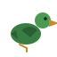

18
Casos abiertos
Bienvenido al sistema de control de rescate y adopción animal. Desde aquí puede consultar el estado general del refugio, registrar un nuevo animal rescatado y revisar el listado completo de casos.
Casos abiertos
En tratamiento
En adopción
Voluntarios disponibles
Rescatada cerca del mercado central. Estado: en tratamiento.
Encontrado en la vía perimetral. Estado: en adopción.
Ala fracturada. Estado: en tratamiento, con liberación programada.

Rescates caninos con protocolo de adopción y seguimiento clínico.

Rescates felinos con expediente clínico diferenciado.

Especies silvestres derivadas a rehabilitación y liberación.